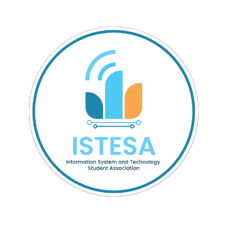
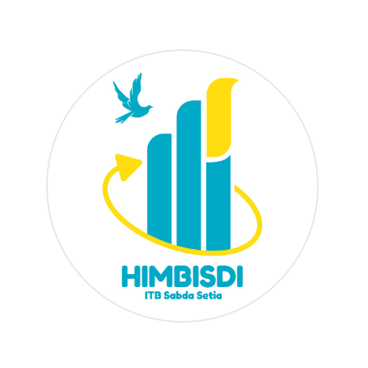
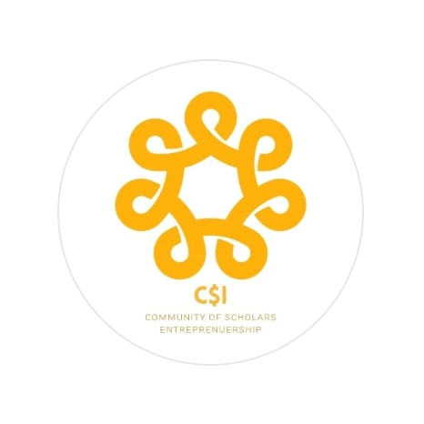

Prodi ITBSS
Institut Teknologi & Bisnis Sabda Setia menyediakan tiga program studi,
yaitu Sistem Informasi & Teknologi, Bisnis Digital, dan Kewirausahaan.
Program Studi Sistem dan Teknologi Informasi (S1) |
|
Program studi Sistem dan Teknologi Informasi (STI) merupakan penggabungan Sistem Informasi (SI) dan Teknologi Informasi (TI) untuk menjawab tantangan perkembangan teknologi dan transformasi digital yang semakin pesat.
STI mempelajari bagaimana merancang dan mengimplementasikan produk digital (aplikasi, website, dan desain) yang sesuai dengan tujuan bisnis dan pemecahan masalah kehidupan sehari-hari.
STI juga mempelajari teknologi-teknologi yang sedang berkembang (emerging technologies). |
 |
| Mahasiswa program studi Sistem dan Teknologi Informasi akan mendapatkan bekal pengetahuan dan pengalaman untuk menganalisis permasalahan pada suatu perusahaan atau organisasi dan mencari serta menghasilkan solusi berbasis sistem teknologi informasi. |
Program Studi Bisnis Digital (S1) |
| Program studi Bisnis Digital mempersiapkan lulusan yang memiliki skill digipreneur unggul serta mampu mengembangkan dan mengaplikasikan teknologi digital yang mumpuni.
Mahasiswa akan dibekali dengan pembelajaran yang berbasis teori, praktik, dan fasilitas perkuliahan yang modern agar mahasiswa dapat mendapatkan pengalaman pembelajaran yang optimal.
Program studi Bisnis Digital memiliki tiga konsentrasi utama yaitu Digital Marketing, Technopreneur, dan Digital Business Analyst. |
 |
| Mahasiswa program studi ini akan mengembangkan skills, pengetahuan, alat, serta teknik yang diperlukan untuk menjadi sumber daya manusia yang unggul di bidang penguasaan Business Intelligence dan Digital Marketing and Advertising. |
Program Studi Kewirausahaan (S1) |
| Program studi Kewirausahaan bertujuan untuk mempersiapkan mahasiswa untuk menjadi Creativepreneur yang mampu mengidentifikasi
dan menerapkan ide, konsep, dan strategi baru dalam merencanakan, mengelola, dan mengembangkan sebuah usaha atau bisnis.
|
 |
| Mahasiswa akan ditantang untuk menemukan dan merespon peluang-peluang yang ada dalam berusaha. |
| Program studi Kewirausahaan melatih kepekaan dan kemandirian mahasiswa untuk menjadi seorang entrepreneur atau pengusaha yang handal. |